Foodrail - Documentation
Introduction
Thank you for purchasing Foodrail Creative Agency Wordpress Theme! In this document you will find information on how to install, manage and update your theme, as well as create content, install plugins, import Demo data etc. If you have any questions that are beyond the scope of this help file, please feel free to contact us via Support link. We will do our best to answer you in shortest of time.
Note: All images are just used for Preview Purpose Only. They are not part of the theme and NOT included in the final purchase files.
Need Support?
We are always happy to help and we value our customers. All our files come with User Manual prepared specifically for each product – these help files are located inside your download packages.
Support for our items includes:
- Responding to questions or problems regarding the item and its features
- Fixing bugs and reported issues
- Providing updates to ensure compatibility with new software versions
Item support does not include:
- Customization and installation services
- Support for third party software and plugins
Support requests are processed on business days from 8:00 to 20:00 (GMT + 5.30 ) within 24hrs (usually less) in the order they were received. Support request sent during weekends/holidays will be processed on Monday or the next business day.
If you have any questions regarding to theme issues, please send us support request here.
You Need Installation or Customization Services?
If you need help Installation, Website/Theme Customization or Development, Add Specific Functionality, Back-end Custom Work, Front-end Custom Work, Custom Theme/Plugin Development, Theme & Plugin Updates and Testing & Bug Fixing, Please send us request HERE with your requirement. Our expert technical team will help you with some fees.
WordPress Information
To install this theme you must have a working version of WordPress already installed. If you need help installing WordPress, follow the instructions in WordPress Codex. Below are all the useful links for WordPress information.
- [WordPress Codex] - General info about WordPress and how to install on your server.
- [First Steps With WordPress] - General info about multiple topics about WordPress.
- [FAQ New To WordPress] - The most popular FAQ’s regarding WordPress.
Recommended PHP Configuration Limits
Many issues that you may run into such as; white screen, demo content fails when importing, empty page content, max execution time error, memory limit error, upload max filesize error and other similar issues are all related to low PHP configuration limits. The solution is to increase the PHP limits. You can do this on your own, or contact your web host and ask them to increase those limits to a minimum as follows:
Download Theme Package
To download, you need to log into your ThemeForest account and go to your download page. Locate the theme that you purchased in your Downloads list and click on the Download button
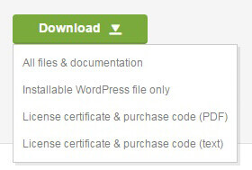
- All files & documentation : contains documentation, licenses, theme package, child theme package etc. So if you select this option, you need to extract the downloaded package and install the theme package inside.
- Installation WordPress file only : contains only the theme package
- License certificate & purchase code (PDF) : contains only the theme package
- License certificate & purchase code (text) : contains your license information in a text file
Theme Installation
After you download the package from ThemeForest, please unzip it. You'll see a file called foodrail.zip, which is the main file needed to upload and install.
The theme files can be uploaded in two ways:
- Install via WordPress
- Install via FTP
1) Install via WordPress
- Login to your WordPress Dashboard.
- Navigate to Appearance > Themes
- Click Add New button on top of the page.
- Then click Upload Theme
- Browse to the foodrail.zip file and click Install now for the theme to be uploaded and installed.
- After done installing, click Activate the theme
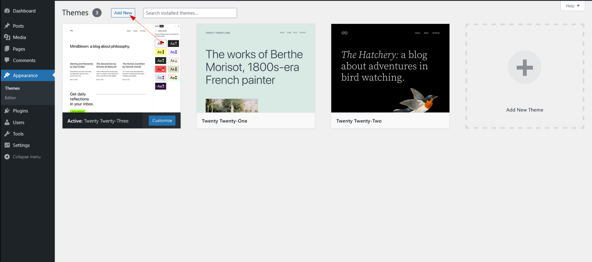
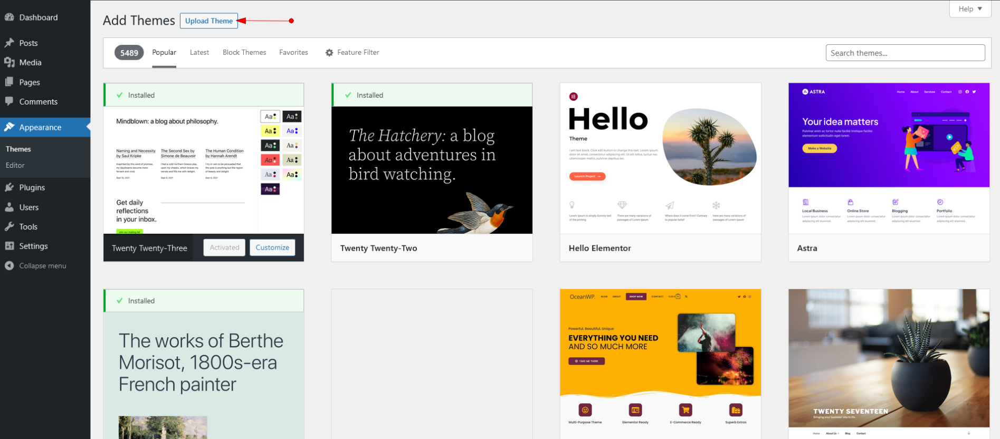
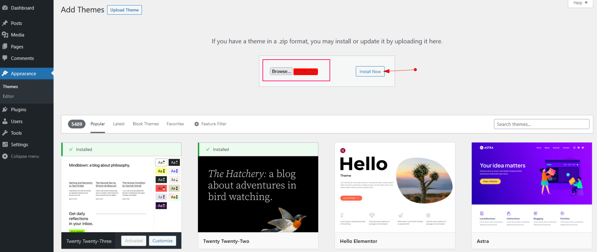
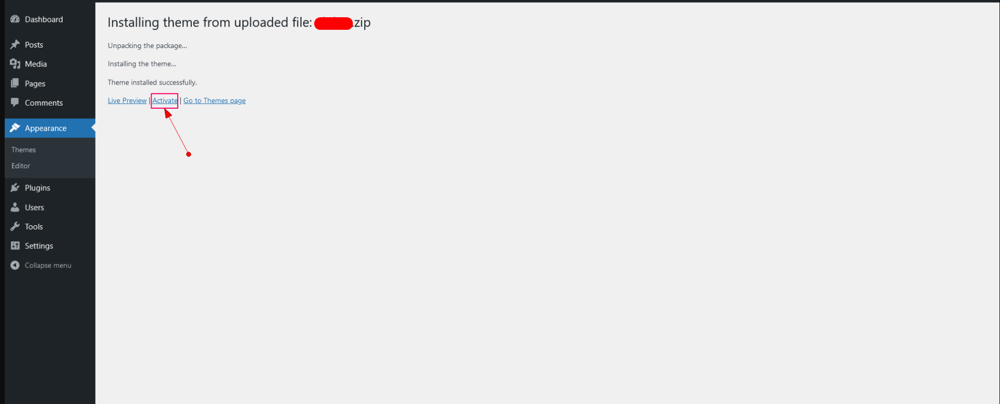
2) Install via FTP
- Using an FTP client (like FileZilla), connect to your server/hosting and navigate to your WordPress installation.
- Navigate to /wp-content/themes/ folder and upload the theme folder there (you need to unzip the theme foodrail.zip package first).
- Locate your WordPress installation and upload the theme directory foodrail (you unzipped in the previous step) into ../wp-content/themes/ in your WordPress installation.
- Log in to your WP Admin Dashboard and go to Appearance > Themes
- You will now see foodrail listed among the other themes. Just activate it!
- Click on the Begin activating plugins links Or Go to Appearance > Install Plugins.
- Select all plugins that you wish to install (Selecting all of them is recommended).
- Change Bulk Actions drop down to Install then click Apply in order to install the selected Plugins.
- After all plugin Installed then click on below Return to Required Plugins Installer link.
- Select again all plugins and Change Bulk Actions drop to Active then click Apply order to active the selected plugins..
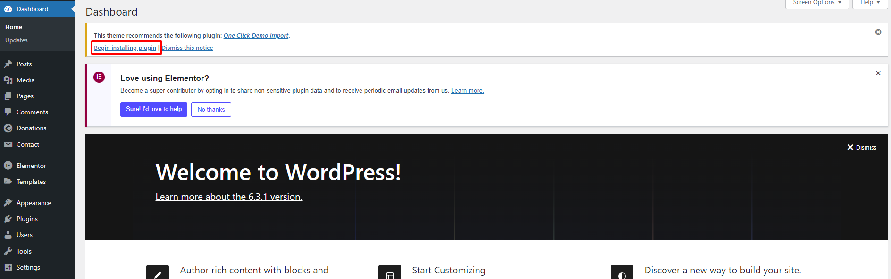
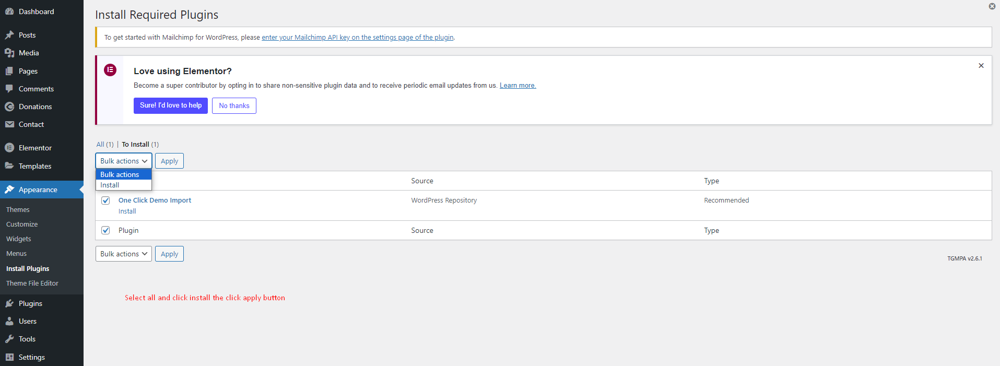
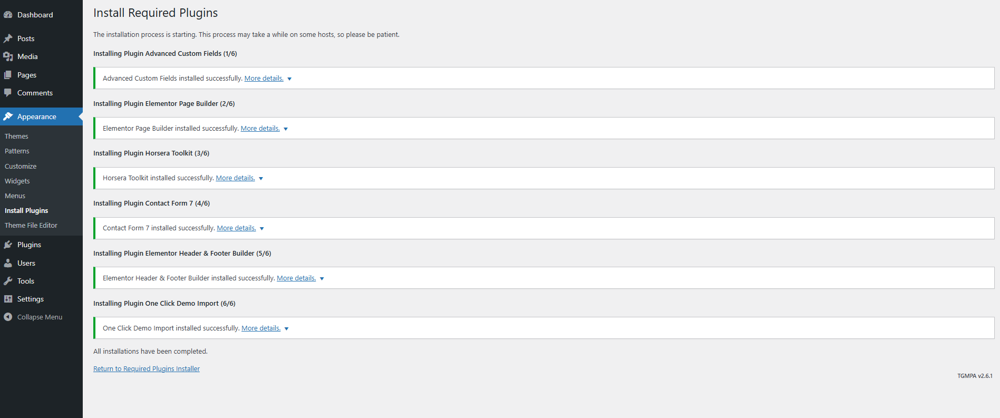
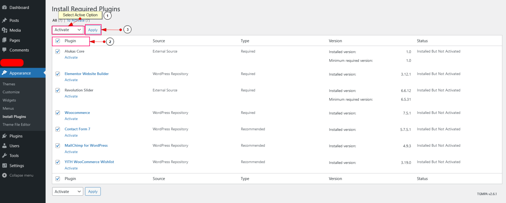
Import Demo Content
-
Login to your WordPress dashboard.
-
Go to Appearance > Demo Import.
-
Choose demo as you want to import.
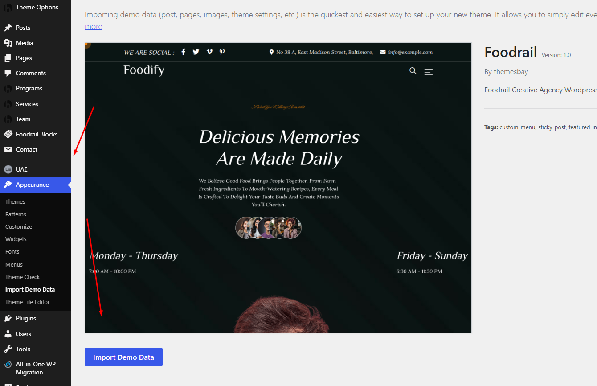
Translation Theme
The easiest way to translate our theme and plugin in your language is by using the Loco Translate WordPress plugin. To use loco translate plugin, please see the steps below:
Notice: If you translate complete our theme in your language, You must be need to translate our theme(foodrail) and our theme's plugin(foodrail Extensions)
1) Translate Theme(foodrail)
- Install Loco Translate WordPress plugin.
- Go to Loco Translate > Themes and click foodrail theme.
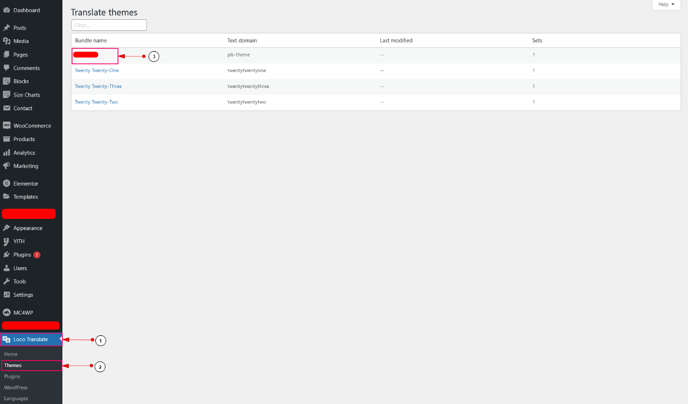
- Click New Language link.
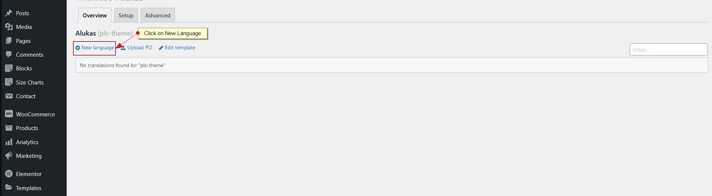
- Choose your language and choose a location is in languages/themes/. We recommend you don’t choose a location is in themes/foodrail/languages/, because after you update the theme all your custom files will be lost.
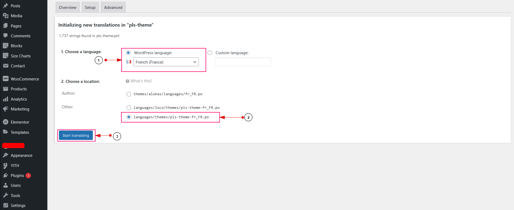
- Click Source Text and enter the text you want to translate in French translation.
- Click Save button.
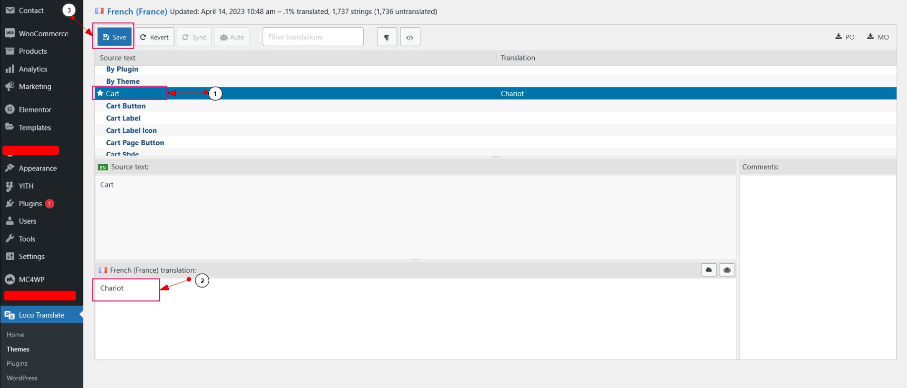
- Note: To update your language file when you updated the theme, you only click Sync button.
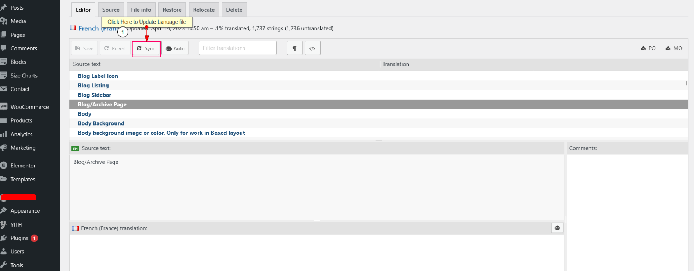
2) Translate plugin(foodrail Core)
- Install Loco Translate WordPress plugin.
- Go to Loco Translate > plugin and click foodrail-core.
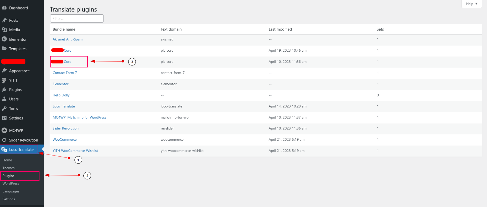
- Click New Language link.
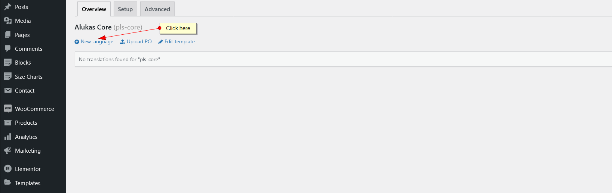
- Choose your language and choose a location is in languages/themes/. We recommend you don’t choose a location is in themes/foodrail/languages/, because after you update the theme all your custom files will be lost.
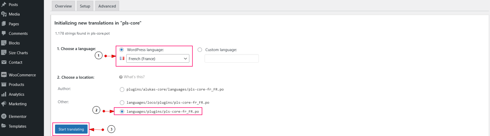
- Click Source Text and enter the text you want to translate in French translation.
- Click Save button.
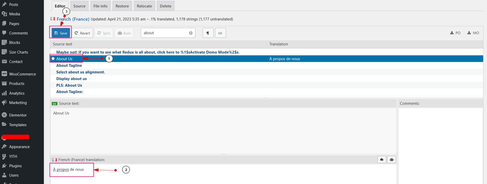
- Note: To update your language file when you updated the theme, you only click Sync button.
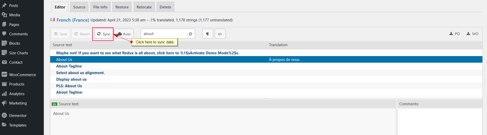
3) Use WPML with foodrail
foodrail theme is fully compatible with WPML plugin, the most famous plugin for building multilingual websites. Below you will find documentation for using WPML plugin with foodrail. If you’ve purchased WPML and have any questions or issues, please check the links below.
- WPML Plugin - The highly recommended plugin to manage multi-lingual sites
- WPML Forum Support - If you bought WPML then you get free support from their amazing team
- Translating Widgets -Tutorial recommended by wpml team for translating widgets
Translate With WPML
foodrail theme fully compatible with WPML plugin. WPML makes it easy to translate your whole site in minutes.You can automatically translate your entire site using the Translate Everything mode. With this setting, WPML will automatically translate your content as you publish or update it. Translations can then be reviewed on the front-end and edited by the user (or local translator) if needed.
Installing WPML
The first time you use WPML, you can manually install it using the OTGS Installer plugin. This also allows you to register WPML so you can receive automated updates to future versions.
Learn more : WPML installation guide
Please install following WPML components.
- WPML Multilingual CMS
- String Translation
- Translation Management
- Media Translation
- WooCommerce Multilingual
WPML Setup Wizard
When you first activate WPML a setup wizard will help you specify the essential settings you need to prepare your site for multilingual content.
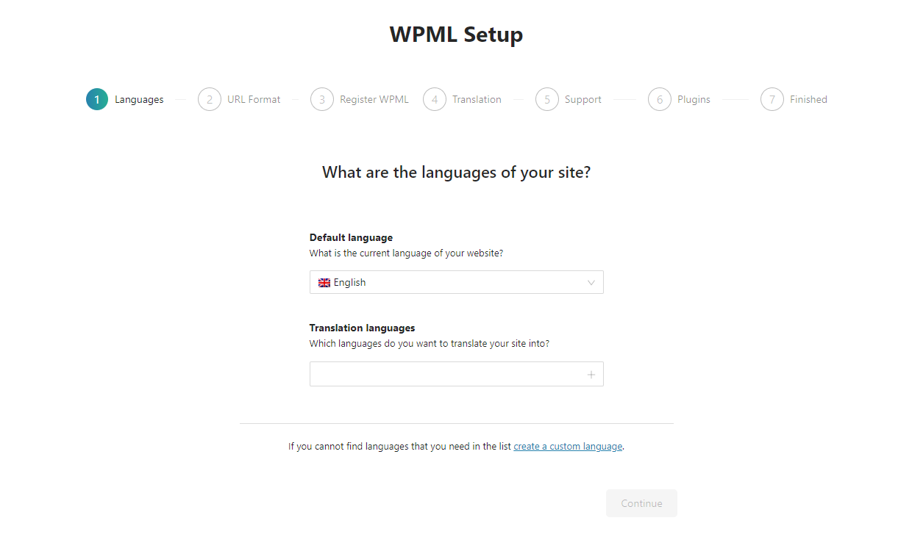
Follow the wizard to:
- Choose your site’s languages
- Choose your URL format
- Register WPML
- Choose your translation mode (see the next section for more details)
Translation Mode Options in WPML
You have two options for translating your site: Translate Everything or Translate Some. The WPML setup wizard will try to choose the best option for you depending on how much content is on your site.
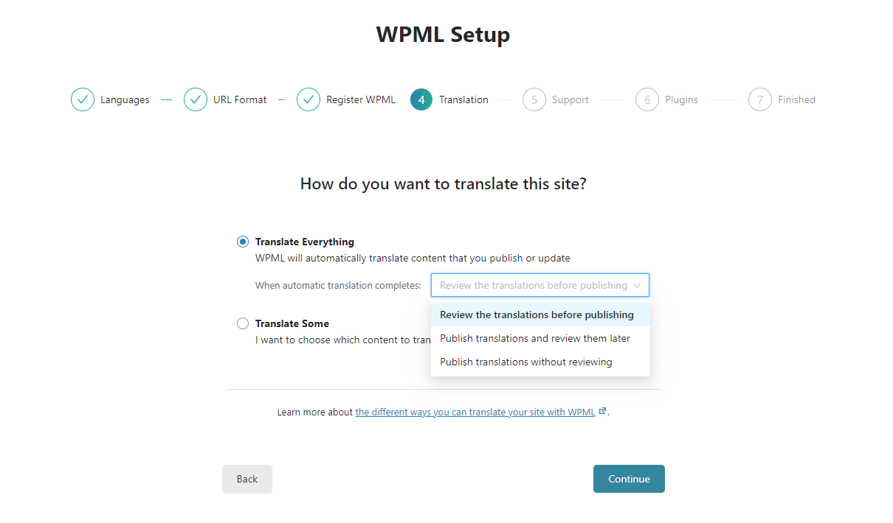
Translate Everything
When you select the Translate Everything mode, it automatically translates all your site’s content in minutes.
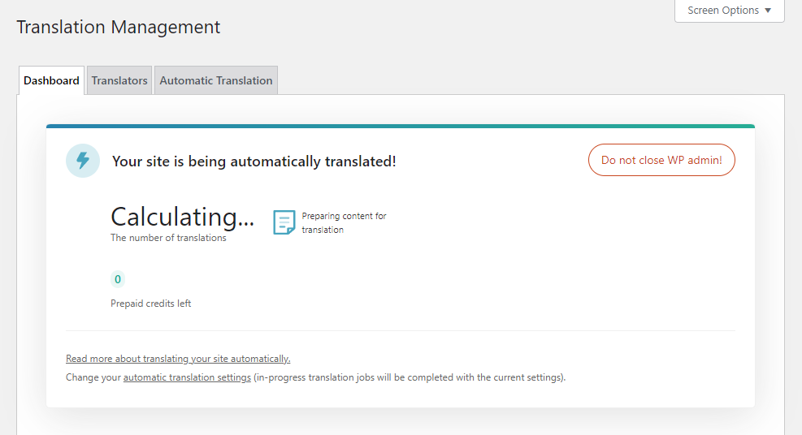
This feature works for the following types of content:
- Pages
- Posts
- Taxonomy terms that are assigned to posts or pages
- WooCommerce products
- And also work with custom post types, custom taxonomies
Learn More: WPML’s automatic translation. options.
Translate Some
If you don’t want to translate your whole site or would prefer to hire translators to work on your site, this option gives you more control over what you translate and who will translate it.
After selecting this translation mode, go to the WPML => Translation Management page and select content to translate.
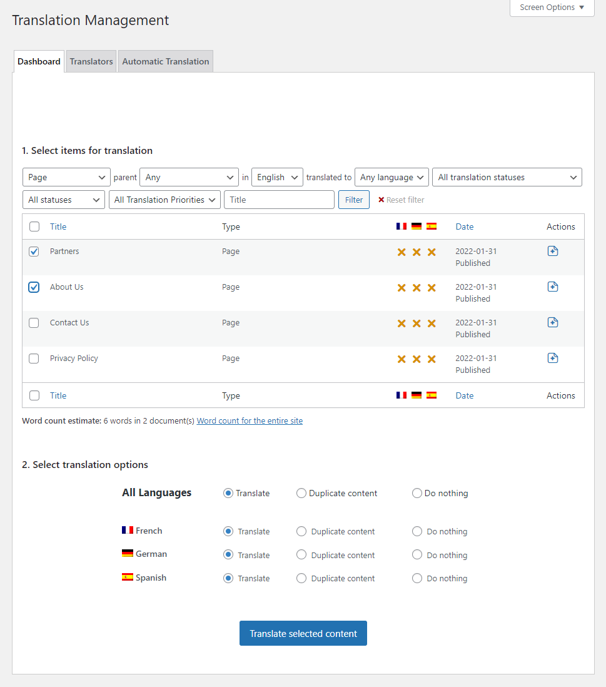
Translating Yourself
If you want to translate your site your self, Then you can translate your posts and pages by clicking the plus and pencil icons.
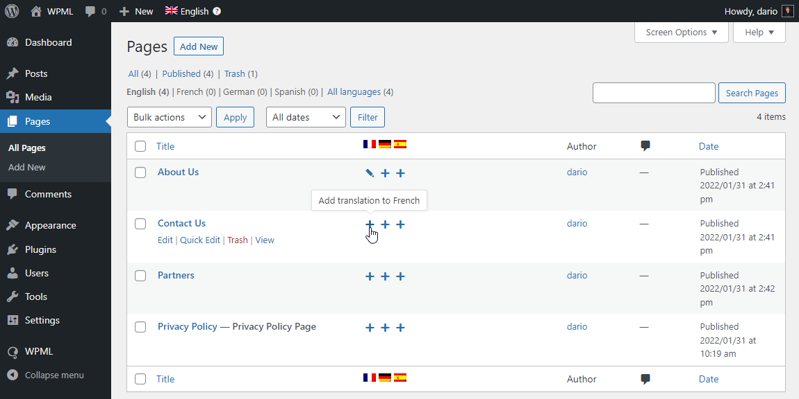
When you or a local translator click to translate the content, you’re taken to WPML’s Advanced Translation Editor. It’s a professional-grade translation tool with features like one-click automatic translation, glossary, spell-checker, and more.
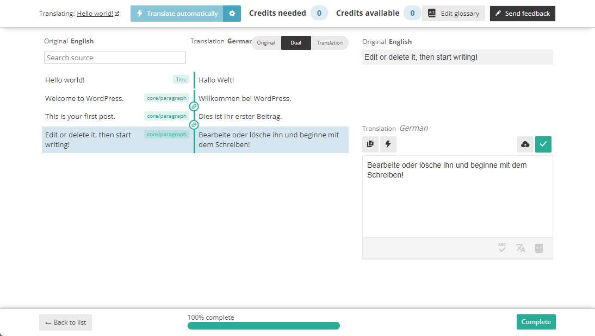
Learn more: About WPML’s Advanced Translation Editor.
Translating Blocks and Size Chart
To translate the custom post types and taxonomies,go to WPML => Settings => Multilingual Content Setup. Navigate to Post Types Translation where you can choose the translations for Blocks, Size Charts.
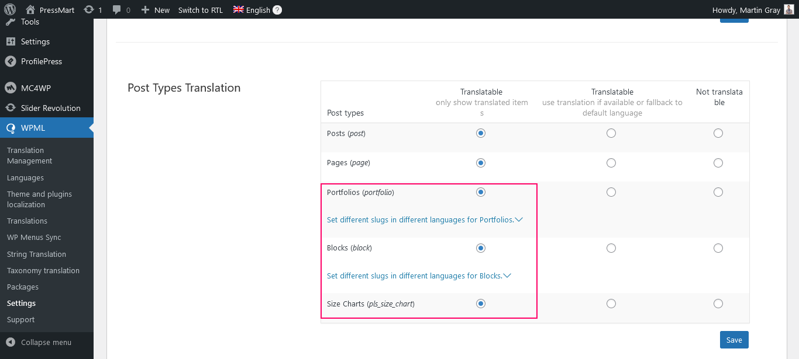
Please follow below step for translate page,post or cusotm post type.
1) Clicking the plus Or pencil icons.
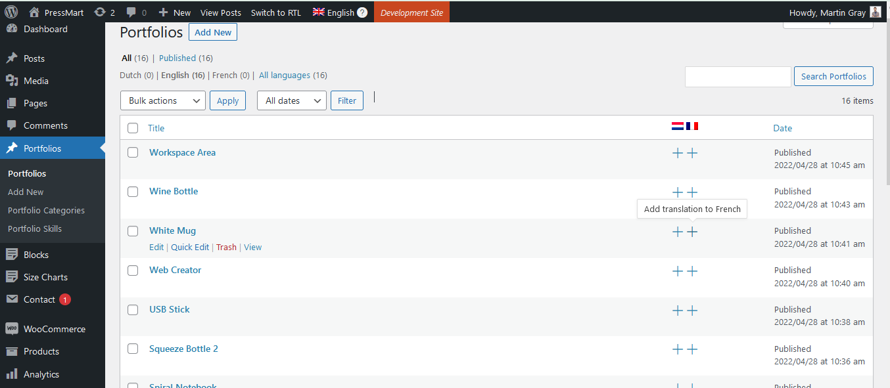
2) Click to plus icon, translate it and Save
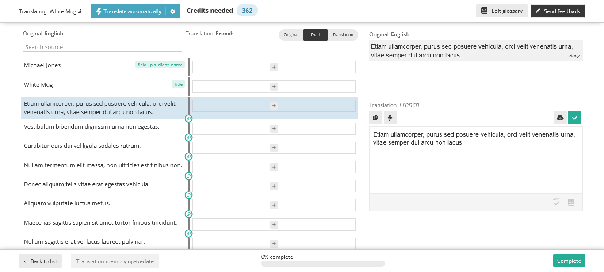
3) If you want to translate automatically then click on Translate Automatically button. For this you need to purchase some credits.
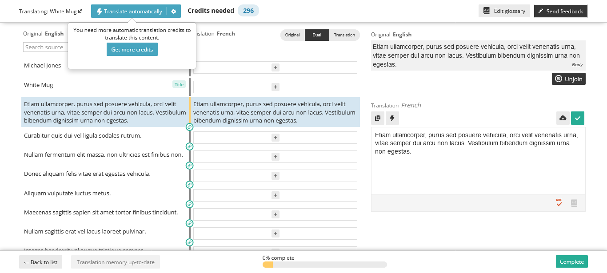
Learn more: About automatic translation.
Translating theme and plugin texts
WPML String Translation allows users to translate texts that are not in posts, pages, and taxonomies.
Go to WPML => String Translation
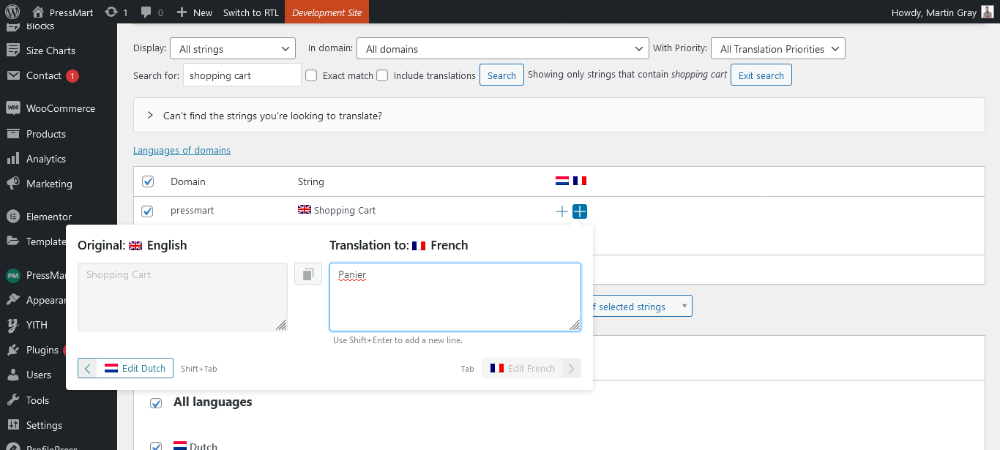
Learn more: About String translation..
Scanning Themes and Plugins for Texts
If you didn't find any string in WPML => String Translation list then you need to scanning theme and plugin
Go to WPML => Theme and plugins localization. Select theme or plugin and then hit the scan string button.
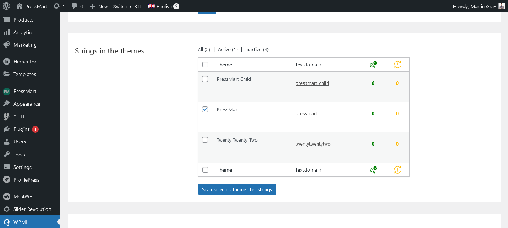
Translating Custom Taxonomy
To translate the custom taxonomies,go to WPML => Settings => Multilingual Content Setup. Navigate to Taxonomies Translation where you can choose the translations for portfolio category, portfolio skill, product brand etc.
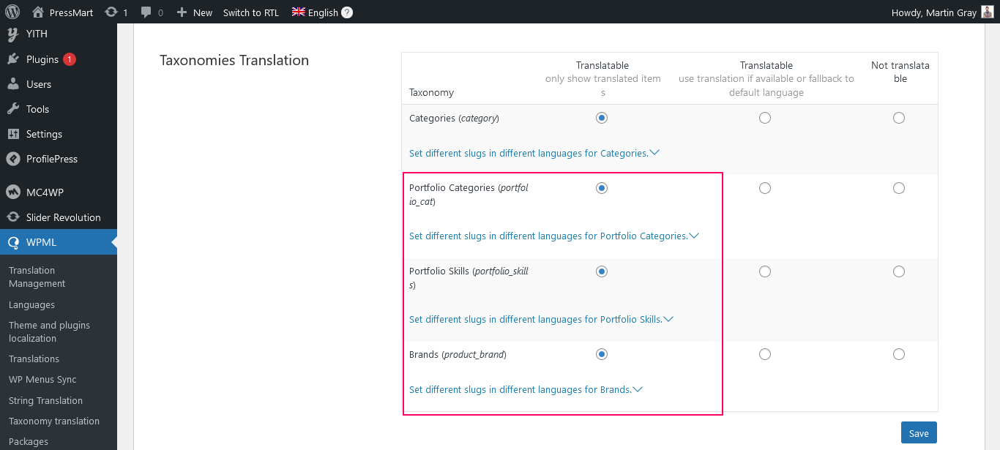
You can translate categories and tags assigned to a specific post or portfolio pages while translating them using the WPML translation editor screen. Furthermore, you can translate categories and tags on the WPML => Taxonomy Translation page.
1) Go to WPML => Taxonomy Translation and select taxonomy. Click to plus icon for translate it
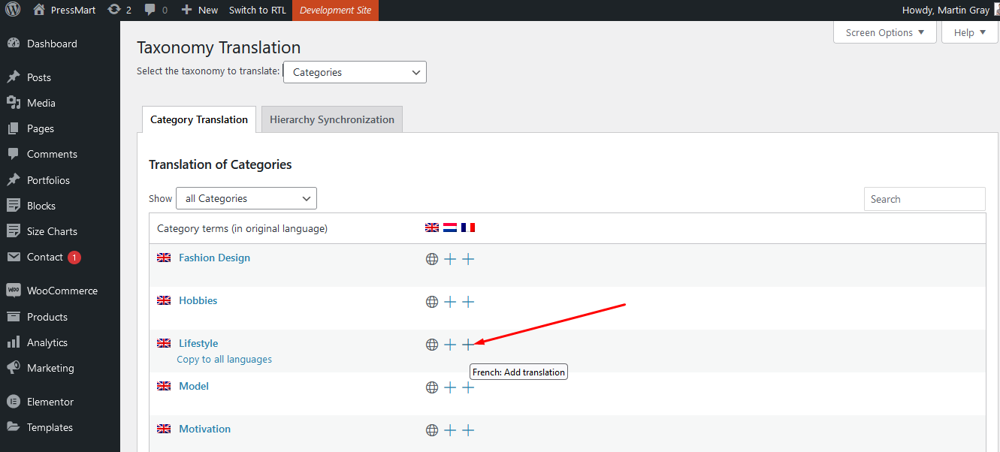
2) Translate in your language and save.
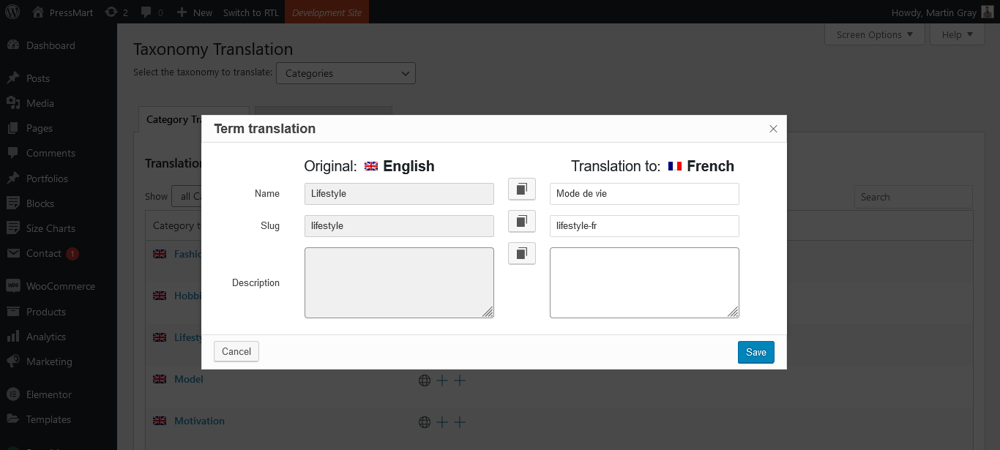
Translating Menu
You can translate menus automatically, manually, or have WPML synchronize menu content.
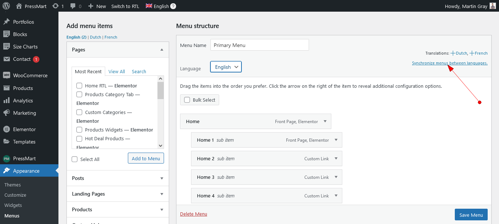
Learn more: About How translating menus.
Translating Widgets
you can easily translate your widgets using WPML’s String Translation. Go to WPML => String Translation and select Widgets in the domain selection dropdown. You will see all the default widgets registered available for translation. Or, you can use the search bar to find text from a custom widget.
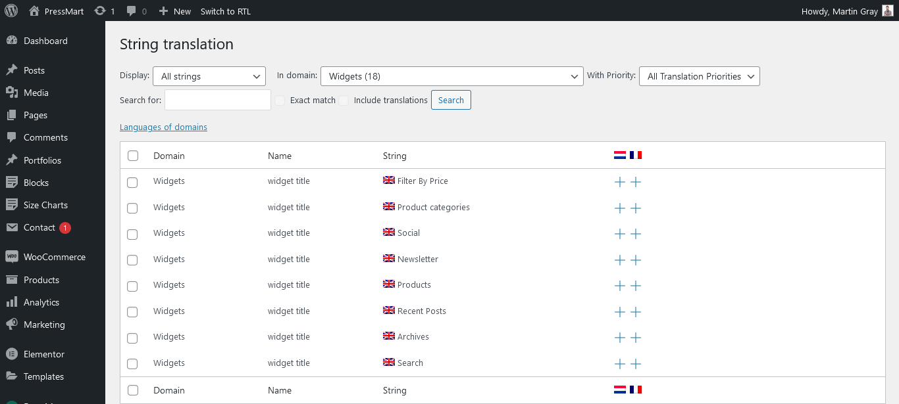
Learn more: About How translating Widgets.
WooCommerce Multilingual
WooCommerce Multilingual allows you to run WooCommerce stores with several languages and currencies.
set up the most important options for your multilingual store. To adjust any of these settings later, go to WooCommerce > WooCommerce Multilingual and click the Status tab.
Learn more: About WooCommerce Multilingual.
Enabling Multiple Currencies
With WooCommerce Multilingual, you can use multiple currencies on your sites. To enable it, go to WooCommerce > WooCommerce Multilingual and click the Multi-currency tab. There, you can configure secondary currencies, set different prices per currency, adjust currency switcher options, and more.
Learn more: About Multiple Currencies.
Translating WooCommerce Products
You translate WooCommerce products just like posts and pages. You can use the Translate Everything mode, choose to translate yourself or send products for translation to other translators or a translation service.
Learn more on the page about using WooCommerce Multilingual.
Translating Slider Revolution
The theme comes with the powerful Slider Revolution plugin. WPML have detaild documentation for how to translate Slider Revolution.
Language Switcher in Theme Header
Please follow Below step.
Go to WPML => Languages and enable Custom language switchers option.
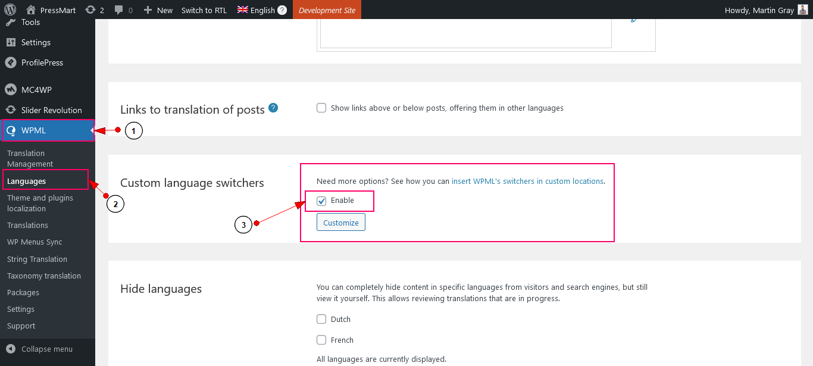
Customize language switcher as your need.
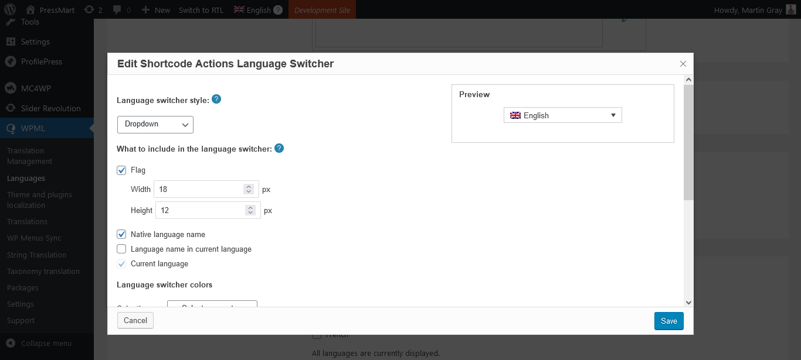
It's look like below image.
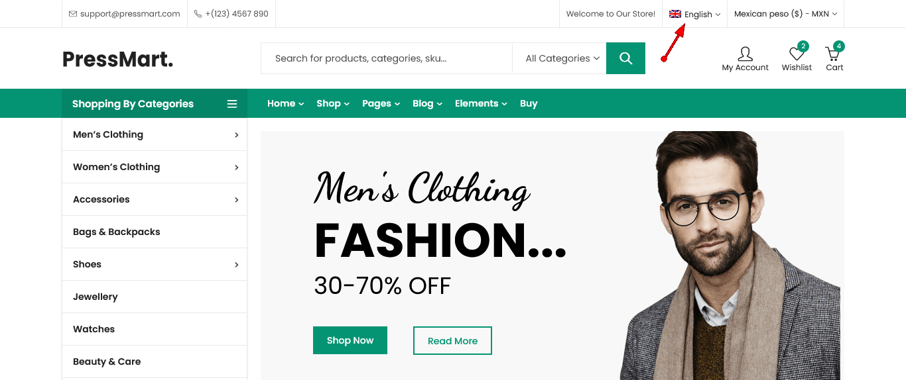
WPML Helpfull Links
Below you will find documentation for how to use WPML plugin.
Updating the theme
If you updating foodrail theme, Please following below step and update foodrail theme and this step is very easy and simple:
Notice:After updating the theme, Your content will not be lost. However, any customizations to the theme’s core files, such as PHP files, language files will be lost. So you need to the child theme to customize the theme and backup the language file if you translated the theme.
1.Manual Update Via WordPress
- First Download Latest Installable theme from here.
- Login to your WordPress Dashboard.
- Go to Appearance > Themes
- Click Add New button on top of the page.
- Then click Upload Theme
- Upload the file you’ve downloaded from ThemeForest in step 1 and click Install Now
- After done installing, click Replace current with uploaded button
- That's It.
2.Manual Update Via FTP
- First Download Latest Installable theme from here Then extract it to your computer..
- Access your server via FTP or SFTP
- Browse to wp-content/themes/
- Delete the current theme folder (folder "foodrail") then upload the new one downloaded in step 1. (Don't forgot to upload unzip folder.)
Plugin Update
You can update plugin like 'Slider Revolution' and others by following these steps--:
Notice: If you translated plugins and the language files are in plugins/your-plugin-name/languages/ (For example, plugins/foodrail-code/languages), you need to upload them to wp-content/languages/plugins/. If not, after updating plugins, your translated language files will be lost.
- Login to your wp-admin
- Go to Plugins > Installed Plugins
- Now, delete those plugins which you want to update. For example, if you want to update 'Slider Revolution' plugins, then delete those plugins first.
- After deleting, you will get a notice to install those plugins again.
- Now install and activate those plugins. After installing, plugins will be updated automatically.
Child Theme
A WordPress child theme allows you to apply custom code changes to your site. Using a child theme ensures that all your customizations will not be overwritten even when you update the parent theme.
foodrail is fully child theme compatible. We have attached a basic child theme(foodrail-child.zip) to the download package which contains the minimum of required files. If you are planing any code customizations we highly recommend to do this inside the child theme! Learn more about child themes here.
1) What is a Child Theme?
A child theme is a theme that inherits the functionality and styling of another theme, called the parent theme. Child themes are the recommended way of modifying an existing theme. Child themes allow you to modify or add to the functionality of the existing parent theme.
2) Why use a Child Theme?
Always use a Child Theme when modifying any theme files. This way you make sure a theme update will not wipe out any changes you have made to the files.
There are a few reasons why you would want to use a child theme: If you modify a theme directly and it is updated, then your modifications may be lost. By using a child theme you will ensure that your modifications are preserved.
Speed Optimization
What can make your site slower?
1. Plugins:
When you have a number of plugins active on your site, it can slow down your site. Deactivate all the plugins except the ones included within the theme and clear the browser cache. Then, you can activate your plugins one by one and check to see which plugin is slowing your site.
2. Images:
Images are a key factor in optimizing a website. It is important to optimize your images for your website. Images with large size can slow down your site. Do not upload images in large size. For instance, if your weblog is created by images with the size 800*600, you should upload an image with the same size and not bigger.
3. Host:
Your host or sever can be a reason of your site low speed. If you are using VPS for your hosting, it can be because of bad configurations and low resources. If you are using shared hosting, you need to contact your host provider in this regard so they can check it.
4. JS and CSS Files:
You should use a cache plugin. These plugins minify your files and combine them and stores a version of the file in cache in order to reduce your server requests and as a result, it will boost your site speed.
How To Improve Site Speed ?
1. Image Optimize:
You can compress images from CompressJPEG/TinyPNG website. Visit https://compressjpeg.com Or https://tinypng.com/ and compress all images before uploading them on your website. By this process, you can decrease your website loading time and provide your visitors, a better experience.
2 .htaccess Code For Better Website Speed:
If you familiar with .htaccess, you can go to the root foldef of your WordPress installation. Find .htaccess file and open it.Insert following code.
AddType application/x-font-woff .woff
AddType application/font-woff2 .woff2
AddType application/vnd.ms-fontobject .eot
<IfModule mod_deflate.c>
AddOutputFilterByType DEFLATE text/html
AddOutputFilterByType DEFLATE text/css
AddOutputFilterByType DEFLATE text/javascript
AddOutputFilterByType DEFLATE text/xml
AddOutputFilterByType DEFLATE text/plain
AddOutputFilterByType DEFLATE image/x-icon
AddOutputFilterByType DEFLATE image/svg+xml
AddOutputFilterByType DEFLATE application/rss+xml
AddOutputFilterByType DEFLATE application/javascript
AddOutputFilterByType DEFLATE application/x-javascript
AddOutputFilterByType DEFLATE application/xml
AddOutputFilterByType DEFLATE application/xhtml+xml
AddOutputFilterByType DEFLATE application/x-font
AddOutputFilterByType DEFLATE application/x-font-truetype
AddOutputFilterByType DEFLATE application/x-font-ttf
AddOutputFilterByType DEFLATE application/x-font-otf
AddOutputFilterByType DEFLATE application/x-font-opentype
AddOutputFilterByType DEFLATE application/x-font-woff
AddOutputFilterByType DEFLATE application/font-woff2
AddOutputFilterByType DEFLATE application/vnd.ms-fontobject
AddOutputFilterByType DEFLATE font/ttf
AddOutputFilterByType DEFLATE font/otf
AddOutputFilterByType DEFLATE font/opentype
# For Olders Browsers Which Can't Handle Compression
BrowserMatch ^Mozilla/4 gzip-only-text/html
BrowserMatch ^Mozilla/4\.0[678] no-gzip
BrowserMatch \bMSIE !no-gzip !gzip-only-text/html
</IfModule>
<ifModule mod_gzip.c>
mod_gzip_on Yes
mod_gzip_decfoodrail Yes
mod_gzip_item_include file \.(html?|txt|css|js|php|pl)$
mod_gzip_item_include mime ^application/x-javascript.*
mod_gzip_item_include mime ^text/.*
mod_gzip_item_exclude rspheader ^Content-Encoding:.*gzip.*
mod_gzip_item_exclude mime ^image/.*
mod_gzip_item_include handler ^cgi-script$
</ifModule>
## EXPIRES CACHING ##
<IfModule mod_expires.c>
ExpiresActive On
ExpiresByType application/vnd.ms-fontobject "access plus 1 year"
ExpiresByType application/x-font-ttf "access plus 1 year"
ExpiresByType application/x-font-opentype "access plus 1 year"
ExpiresByType application/x-font-woff "access plus 1 year"
ExpiresByType application/font-woff2 "access plus 1 year"
ExpiresByType image/jpg "access plus 1 year"
ExpiresByType image/jpeg "access plus 1 year"
ExpiresByType image/gif "access plus 1 year"
ExpiresByType image/png "access plus 1 year"
ExpiresByType text/css "access plus 3 month"
ExpiresByType application/pdf "access plus 3 month"
ExpiresByType text/x-javascript "access plus 3 month"
ExpiresByType application/x-shockwave-flash "access plus 3 month"
ExpiresByType image/x-icon "access plus 1 year"
ExpiresDefault "access plus 3 month"
</IfModule>
## EXPIRES CACHING ##
<ifModule mod_headers.c>
Header set Connection keep-alive
</ifModule>
<IfModule mod_header.c>
# 3 Month
<FilesMatch "\.(flv|gif|jpg|jpeg|png|ico|swf)$">
Header set Cache-Control "max-age=7257600"
</FilesMatch>
# 1 Week
<FilesMatch "\.(js|css|pdf|txt)$">
Header set Cache-Control "max-age=604800"
</FilesMatch>
# 10 Minutes
<FilesMatch "\.(html|htm)$">
Header set Cache-Control "max-age=600"
</FilesMatch>
# NONE
<FilesMatch "\.(pl|php|cgi|spl)$">
Header unset Cache-Control
Header unset Expires
Header unset Last-Modified
FileETag None
Header unset Pragma
</FilesMatch>
</IfModule>
# END WordPress
(Note: Please don't replace any code that already exists on the .htaccess file. It may have serious implications on your website.)
3. We recommend use follow plugins to boost your site performance..
- WP Rocket
- Autoptimize
- WP Super Cache
1. WP Rocket
- Please install and activate WP Rocket plugin.
- Please check your site after complete the configuration.
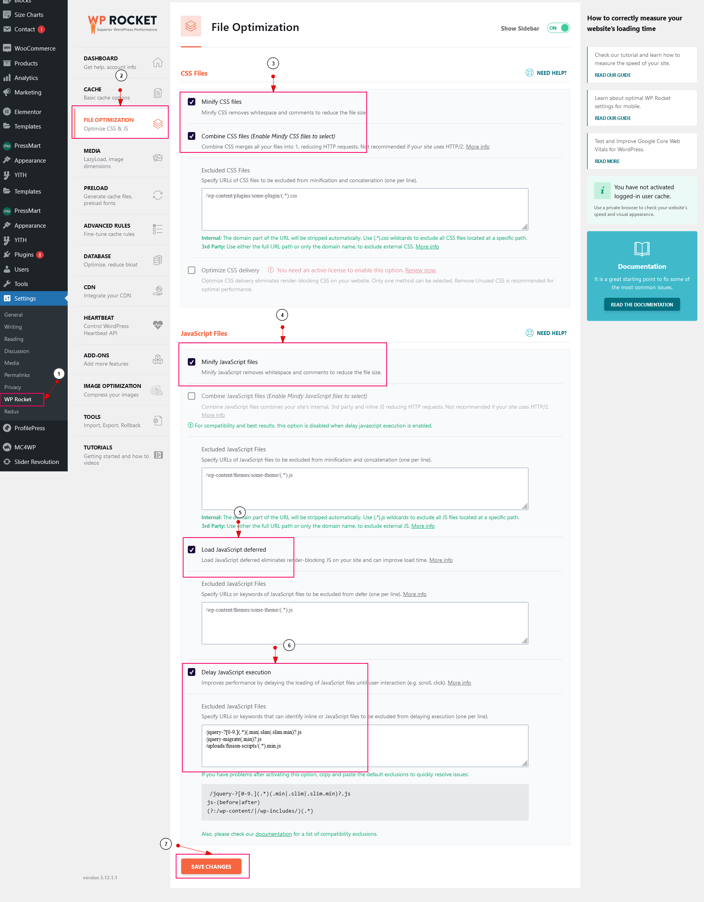
3. Please follow this article for fix slider revolution issue with WP Rocket plugin.
2. Autoptimize
- Please install and activate Autoptimize plugin.
- Please check your site after complete the configuration.
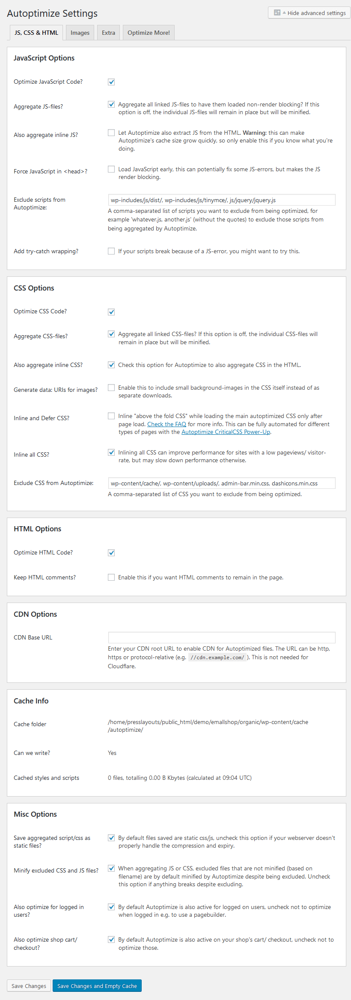
3. WP Super Cache
- Please install and activate WP Super Cache plugin.
- Enable cache options.
- You should exclude the my account, cart, checkout, compare, wishlist pages if you are using WooCommerce plugin.
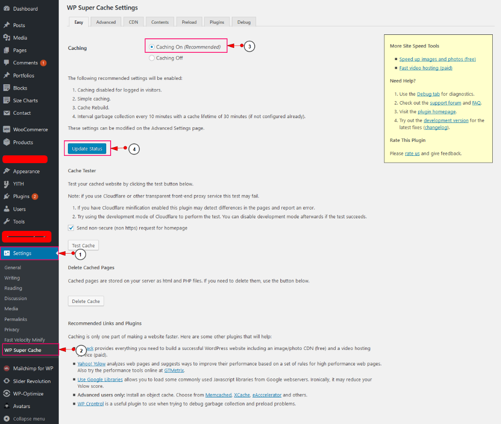
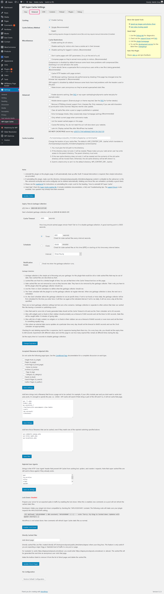
Home Page Setting
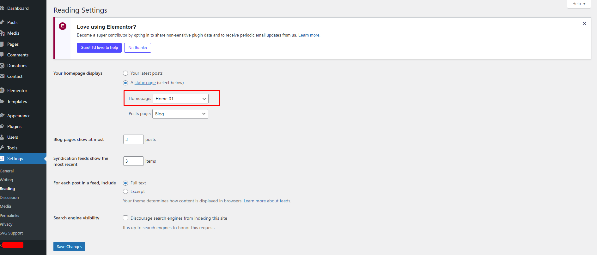
Please go through the following points to learn how to set home page:
- Login to your wp-admin
- Navigate to "Settings > Reading".
- Your homepage displays: Select a static page .
- Homepage : Select home page from dropdown list.
- Then Click on Save button
Create Page
- Go to pages
- Add New page
- Enter page title
- Select Template => Elemntor Full Width
- Then hit the Publish button
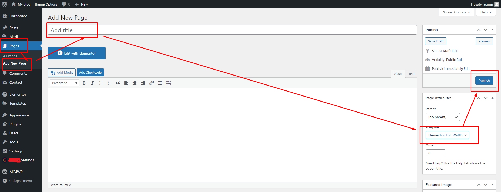
Please go through the following points to learn how to create page:
- Login to your wp-admin and navigate to page.
- Go to add new page.
- Enter page title
- Upload feature image.
- Select page meta options.
- Select page layout.(Full Page, Left Sidebar,Right Sidebar)
- Click on publish button for publish page.
Edit page With Elementor
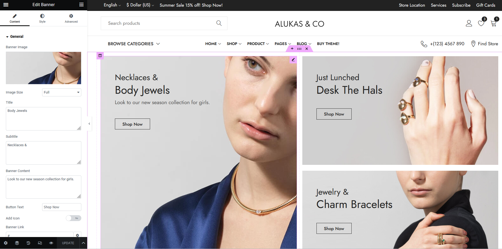
For existing pages, you can select Edit with Elementor directly from the WordPress dashboard.
- From the WordPress dashboard, click the Pages tab
- Hover over the page name
- Select Edit with Elementor
Page Title Background Image
Please go through the following points to learn how to set page title background image:
- Login to your wp-admin.
- Go to Page and edit page which you want to set/edit page title image .
- Scroll down to the foodrail options
- Select page title tab from the left menu. See screenshot
- There you can update backgound color or image. See screenshot. NOTE : It's not work when select title style as Title centered.
Create Post
- Go to posts
- Add New page
- Enter post title
- Enter post details in paragraph
- Select Format => Image
- Select category, tags and input features image
- Click on publish button for publish page.
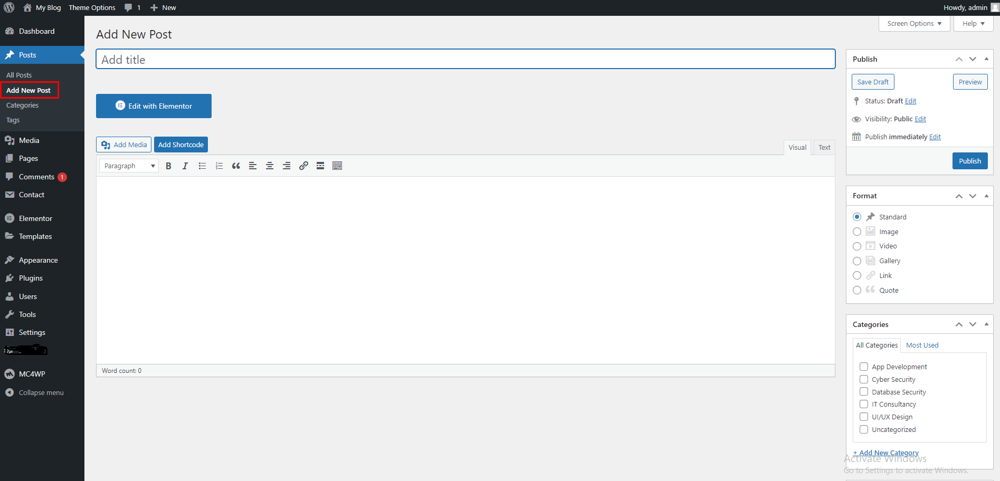
Please go through the following points to learn how to create post:
- Login to your wp-admin and navigate to posts.
- Go to add new post.
- Enter post title.
- Select post format.
- Select post categories.
- Insert post tag.
- Upload post feature image.
- Select post meta options.
- Enter post experts.
- Click on publish to publish post.
Sidebars
WordPress Widgets add content and features to your sidebars. In the foodrail, you have following sidebars:
1. Theme's Sidebar
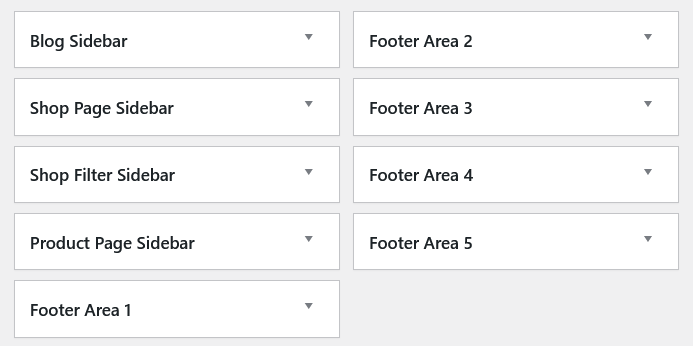
- Blog sidebar - it is displayed on the blog, category, tag, post pages.
- Shop Page Sidebar - it is displayed on the shop, product category, product tag pages.
- Shop Filter Sidebar - It is special sidebar. It is display on shop pages.It's visible when Shop Top Filter options is enable in theme options.
- Product Page Sidebar - It is display on single product page.
- Footer Area 1 - It display on first column in footer area.
- Footer Area 2 - It display on second column in footer area.
- Footer Area 3 - It display on third column in footer area.
- Footer Area 4 - It display on fourth column in footer area.
- Footer Area 5 - It display on fifth column in footer area.
Add Widgets To Sidebar
- Login to the WordPress Dashboard.
- Navigate Appearance > Widgets.
Widgets List
foodrail comes with some custom widgets. See below list of widgets.
Recent Posts
This widget allows you to display recent posts.
Site Logo Global Logo
Site Home logo
Favicon Icon
To upload favicon icon, Please go to Appearance > Customize > Site Identity. From there you can upload site favicon icon.
Theme Options
Theme Options located in WP Dashboard → foodrail → Theme Options includes all global options that affect your entire website. These options can be overwritten by page options of any custom page.
General
This section contain the following options:
- Theme Layout : Select your site layout wide, full or box.
- Container Width : Enter site container width.
- Grid Gap : Select Grid gap here.
- Logo : Upload your site logo.
- Logo Light Version : Upload an alternative light logo that will be used on dark and transparent header.
- Logo Width : Set your logo width.
- Mobile Header Logo : Upload mobile header logo.
- Mobile Header Logo Width : set mobile logo width.
Site Preloader
This section contain the following options:
- Site Preloader : Enable/disable preloader on your website.
- Preloader Background : Set preloader background color.
- Preloader Image : Set preloader type as per your need.
- Choose Preloader Style : Choose preloader style.At this moment we have 5 styles.
- Upload Preloader Image : Upload preloader image.It will be show when you select preloader image as custom option.
Back To Top Button
This section contain the following options:
- Button : Enable/disable back to top button.
- Button In Mobile : Enable/disable back to top button in mobile device.
Promo Bar
This section contain the following options:
- Promo Bar : Enable/disable Promo Bar.
- Height : Set promo bar height.
- Position : Select location for promo bar.
- Position Type : Select position type for promo bar.
- Message : Enter promo message.
- Button : Enable link button in promo bar.
- Button Text : The text of the more info button.
- Enter Url : The text of the more info button.
- Open link in New Tab : Select the link target for more info page.
- Close Button : Enable close button.
- Promo Bar Dismissing : Enable/Disable promo bar dismissing on button close.
Lazy Load Images
This section contain the following options:
- Lazy Load Images : Enables lazy load to reduce page requests.
API Key
How to generate Instagram Acccess Token
1) First go to Facebook Developers Account and login with your own facebook credencials. Then clikc on create App button.
2) Select None Options and press next button.
3) Here, Entere you App Display Name, App Contact email and choose business account if you have one.
4) Now configure your isntagram basic dispaly.
5) Now choose isntsagram basic display app and clikc on Set up button.
6) Scrooll down the page and click on create new app.
7) Enter your app name same as previous. and clikc on create app.
8) Navigate to basic display and find Add or Remove Instagram tester button and click on it.
9) Scroll down page and find instagram tester section and clikc on Add instagram tester button.
10) Enter instagram user name which you want to fetch media.
11) Now login to your instagram acount which you have enter in instagram tester.
12) Go to Settigns => App and Websites and click on tester invite tab.
13) Click to accept and approve invitation.
14)Now go to you facebook developer account. click on your created app and go to the basic dispaly page.
15) Scroll down the page to the "User Token Generationt" section and click on Generate Token button
16) Now your instagram token is generated.
Mobile
You can mange mobile option here. Like mobile menu bg color, Mobile bottom navbar etc.
Typography
You can select font family, font size, font weight, line height etc..
Custom Fonts
This section you can enable custom font and upload font library.
Adobe Typekit Font
This section you can enable adobe typekit font.After enable typekit font you need to enter typekit id and list of font family name(every font family separated by comma) you want to include in site.
Style And Colors
This section you can manage all color options like font color,background color,link color,hover color etc.
Header
This section you can manage following options.
Page Heading
This section you can manage following options.
- Page Heading Layout : Select page heading layout.Disable for hide heading area.
- Page Title : Select if you want to show or hide page heading.
- Breadcrumbs : Select if you want to show or hide the breadcrumbs.
- Breadcrumbs Delimiter : Select breadcrumb separator
Footer
This section you can manage following options.

Blog / Post
This section you can manage following options.
Social
This section you can manage following options.
Elements
Elementor Page Builder will help you manage your content at the WordPress sites and build any layout you can imagine in a few minutes without coding. You can read Elementor Documentation to get more details.
In foodrail, we also create some new elements that will help you build your website a lot easier.
Elementor Settings
Enable elementor page builder for specific post type.
Widgets
1. How to find purchase code?
Note : Without purchase code you can't import our demo content.
- Log into your Envato Market account.
- Hover the mouse over your username at the top of the screen.
- Click ‘Downloads’ from the drop-down menu.
- Click ‘License certificate & purchase code’ (available as PDF or text file).
For more detail Click Here
2. Theme is missing the style.css stylesheet error
That's a common issue caused by not uploading the correct zip file. Go back to http://themeforest.net/downloads and when clicking the Download button, choose the "Installable WordPress file only". And upload this zip file.
3. Are you sure you want to do this?
After browsing for your theme and clicking the "Install Now" button, it’s possible your WordPress installation will ask "Are you sure you want to do this?" This could be due to the fact that you are trying to install the wrong zip file (remember – you want the "Installable WordPress file only") or it’s possible the upload limit on your server isn’t large enough.You'll need to contact your hosting company to have them increase upload_max_filesize value up to 32MB, or you may install the Theme via FTP.
4. 500 Internal Server Error
Please extend below php configuration of our theme requirement in php.ini or Contact your host provider support team and extend below detail.
5. White Screen Of Death or PHP Error Notice
A "white screen of death" happens when there is a PHP error on the site but WP_Debug isn’t enabled on the server. So the first thing to do would be to enable WP_Debug so you can read what the actual error is and thus fix the problem.
6. How to show Registration Form on My Account page?
Please go Woocommerce > Settings on admin sidebar.
Please go Accounts section.
Please check Enable registration on the "My Account" page in Registration Options.
7. How to setup Language Switcher and Currency Switcher?
You can show wpml language switcher or wpml currency switcher.
You should enable Show WPML Language Switcher and Show WPML Currency Switcher options in foodrail > Theme Options > Header.
Before enable these options, you should install WPML and WooCommerce Multilingual - run WooCommerce with WPML plugins.
You should configure wpml language switcher in WPML > Languages > Language switcher options. You can see here for more details.
You should configure wpml currency switcher in WPML > WooCommerce Multilingual > Manage Currencies. You can see here for more details.
8. How to update Revolution Slider And foodrail Extensions Plugins?
Important: Before update this plugin, you should delete this plugin in Plugins on admin sidebar.
- Please go Plugins on admin sidebar.
- Please select these plugins.
- Please deactivate these plugins.
- Please select these plugins.
- Please delete these plugins.
- Please go Appearance > Install Plugins on admin sidebar.
- Please select these plugins.
- Please install these plugins.
- Please activate these plugins.
9. Outdated WooCommerce Templates
In case you're seeing a notification in your administration dashboard saying the theme includes some outdated WooCommerce templates, it means you've recently updated WooCommerce but haven't updated the theme yet.
Updating the theme to its latest version will fix the outdated templates.
10. Demo Content Duplicated
When you import our demo content, it can take several minutes depending on the speed of your server. Each time the button is clicked it will import the content, so if it is clicked twice it will import everything two times. There are two ways to get rid of duplicate content.
Method 1: WP Reset Plugin – This plugin is the fastest way to get rid of content. However, it will remove all content from your database and leave the default theme activated. It does not remove plugins, but will deactivate them and remove all pages, posts, menus, sliders, widget data, etc. Basically it removes all the content that you imported from our theme. Only do this if you are able to start over. Click Here To Download.
Method 2: Manual Removal – This method will take longer and simply involves manually removing duplicate items. For example, go to the Appearance > Menu and delete and duplicate items one by one. Same thing for pages, post, sliders, etc.
11.How to create tracking order page?
Create new page and put [woocommerce_order_tracking] shortcode in page. After then you can configure that page in foodrail => Theme Options => Shop. There you can set Order Tracking Page.
Thank you for purchasing our theme
If you have any questions that are beyond the scope of this documentation. Please feel free here.
Thanks so much!